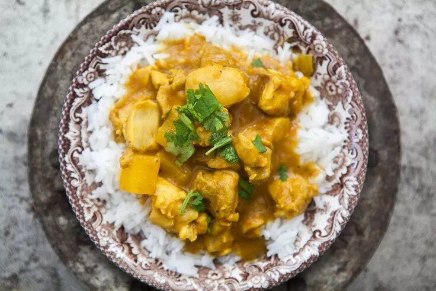

Mango Chicken Curry

Description
There's something about the combination of mango and chicken that just works. We eat mango chutney with roast chicken so often that I even started making my own chutney just so we wouldn't run out.
Here is a mango chicken curry I whipped up the other day.
I love it, but my father thinks it's a little on the sweet side, so feel free to reduce the amount of mango the recipe calls for if you want a little less sweet.
Or add a little more vinegar. The amounts are approximate, feel free to experiment!
Ingredients
- 2 tablespoons vegetable oil
- 1 large onion, chopped (1 1/2 to 2 cups)
- 1/2 red bell pepper, chopped
- 2 garlic cloves, minced
- 2 tablespoons fresh minced ginger
- 2 tablespoons yellow curry powder
- 1/2 teaspoon ground cumin
- 2 mangos, peeled and diced
- 2 tablespoons apple cider vinegar or white vinegar
- 1 13.5-ounce can (full-fat) coconut milk
- 1 1/4 pounds skinless boneless chicken thighs or breasts, cut into 1-inch pieces
- 1/3 cup golden raisins, optional
- Salt and pepper
- Cilantro for garnish
- Cooked rice, to serve
Steps
- Cook onions, bell pepper, garlic, ginger, spices
- Add the vinegar, coconut milk, and one of the two mangoes
- Purée sauce
- Add chicken pieces and raisins
- Add remaining chopped mango to the pan
- Adjust seasonings